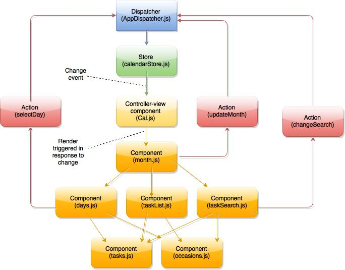

This article will detail the building of a Task Calendar app using React.js, Flux, and styles based on Invision's recently released to-do app kit. This is part one of a two-part series. Part two will introduce new features and look at making a mobile version of the calendar using react native. In this article we'll go over the structure of each JSX component as well as the overall structure of the application. I'll also discuss issues that came up as I was making the calendar, and how I resolved them.
While you need not have built an app with react to follow along, you should have a decent understanding of javascript and be familiar with what react is. If you'd like a deeper introduction to react, check out part one of Tyler McGinnis' series on react and then come on back.
As the scope of this article is limited to how to structure a task calendar app using react and flux, we aren't going to be using a database to store our task information. Rather, we will generate placeholder tasks during the rendering process. If you were to create a task calendar app for a real site, your task information would be pulled from a database and stored in your app's state, in order to allow for modification and updates.

1. Setup
Gulp and Dependencies
You can find the repo for the finished app here. If you'd like to start with a blank slate, use the project skeleton instead. The skeleton has the entire scaffolding for the project set up, though all of the react files are blank. If you use the skeleton and follow along with the article, you will end up with a functional calendar at the end.
Before cloning this project, make sure that you have node.js installed. You will also need to have gulp installed globally. To do this, after installing node, open your terminal and run:
npm install --global gulp
Then, to get started with the skeleton, navigate to where you would like your project folder to be and run:
git clone https://github.com/hilary-L/invision-cal-skeleton.git
cd invision-cal-skeleton
npm install
This will install all of the dependencies for the project and get us ready to put in our react components. Gulp will process our JSX into javascript using browserify/reactify, and will compile our scss files using gulp-compass. The gulp workflow in this project is based off of the workflow demonstrated by part two of Tyler McGinnis' series, but has been modified to include tasks to take care of our stylesheets. I won't be going over how the gulpfile works to process our files, as it's outside the scope of this article. If you would like more information on how to use gulp, browserify, and reactify for your react project, check out Tyler McGinnis' series, and take a look at gulpfile.js in your project folder to see how the Sass tasks have been added in.
Once you've installed the dependencies, in your terminal window, run:
gulp
This should start the gulp watch task, which will take care of our jsx transformations and scss processing as we fill out our components. At the end of the project, you can run
gulp production
And all of the files will be minified into a production build. A final note on gulp: If your app does not seem to be responding to changes, check your terminal. If reactify encounters errors in your JSX, it will throw an error and stop watching your files for changes. To resume watching, fix the error in your file(s) and run gulp in your terminal again.
Styles
I've left the complete styles for the project in the project skeleton. You can see the Sass in \sass\app.scss, and the compiled css in \src\css\app.css. In order to complete this article you won't need to modify the styles for the project, but if you wish to make changes to the app.scss file, make sure that you're gulp task is running so that your main stylesheet is updated in response to your changes.
As I said above, the styles are loosely based off of Invision's to-do kit. The kit itself isn't needed until part two of this series, but if you're building any kind of calendar or to-do app, I'd suggest taking a look at the kit for inspiration.
2. The Flux Structure
Before we get into the meat of all of our components, we're going to go over how this project uses Flux and and take a look at how the project's store, dispatcher, and actions are set up.
If you've read articles on react before, you've probably heard of flux, but you may not have used it, as not every react tutorial app is built using flux. Flux is Facebook's application architecture for structuring react applications. You don't have to use flux to make a react application - an application can work just fine without it, or you can use one of the several flux implementations that the community has created, like Reflux or Alt.
So, if an app doesn't need to use flux, then why use it? The flux architecture exists to help make managing data in a react application easier. Without flux, your react components have to take care of the business of managing state and responding to actions to change state all by themselves. While this isn't significant for smaller, simple apps, when your apps start getting larger and involving more pieces, having your state wrapped up in individual components can get hairy quite quickly.
With flux, all of your data is stored in your stores. An application can have many stores, typically one for each discrete area of the app, and your components can listen for changes from several stores. When your components receive change events, they update their state and trigger a re-render in response. Though this may seem elaborate, with react's virtual DOM, this entire process is amazingly fast. And, with flux's dispatcher, as your app increases in complexity, you can update your stores in a specific order depending on the action that occurs.
The main pieces of a flux application are the components, stores, dispatcher, and the actions. Our application has several components, one store, one dispatcher, and a few actions. We also have a file containing our constants, which our store uses to process the different types of actions it receives from the dispatcher..
From the flux docs, his is what the basic flux data flow looks like:

Specific to this app, here's an example of how ours will work:

Store, Dispatcher, Actions
Before we fill in our components, let's take a look at what makes up the rest of our application. The store is where the state of our application is contained, while the dispatcher and actions are what we use to modify that data in response to events. We'll start with the heart of our application, the store.
Store
Open up stores/calendarStore.js. The store file is relatively long, so let's go piece by piece.

The first five lines of our store are where we create variables and include other portions of the app. In order they are: the dispatcher of our app, the constants that we'll use with our app's actions, objectAssign and EventEmitter which will give our store methods like on() and emit(), and moment.js, which we'll use when we set the initial state of our store.

In the next portion of our store, we create a variable CHANGE_EVENT, and set it equal to the string 'change'. This is the variable that we will use when an action concludes to notify our views that they need to update themselves.
Next, we create the _store variable, which is our data model. Store is an object that contains properties for "moment", "selectedDay", and "search". Each of these is an object with its own properties. Here, we set the initial state of our store. This is what our data will be set to on the initial render of our app. In the case of both selectedDay and search, the values are null, empty arrays, and strings.
In the case of moment, we need to set our initial state to reflect the current date. This is where we make use of moment.js. You'll notice that we seem to have some duplicates - todayYear and year, for example. The year property, along with num, month, and moment will all be modified by actions within our app. Today, todayYear, and todayMonth, by contrast will stay constant, reflecting the values that were calculated upon the app's initial render. We'll use these values for comparisons later in our app. The reason for the varying formats and properties on the moment object will become more clear when we look at the components of our app later in the article.

Next, we have our setter methods. These are the methods that our store will call when the dispatcher sends it a payload and an action type. All that these methods do is modify the values set in the _store variable. In the case of changeSearch and selectDay, the methods simply take the data passed to them and update the store accordingly.
For updateMonth, we do a bit of work on the data that is passed using moment.js. The updateMonth method is going to be invoked in response to a user changing the month/year of the calendar. Therefore, when this action happens, we need to update the store to reflect the new month, and calculate all of the properties in response.
Taking it line by line:
We declare a new variable, newMonth, and set it equal to the store's current month number + the update variable. The update will either be 1 or -1, which corresponds to whether the user advanced the calendar forwards or backwards.
The if statement checks to see whether the resulting variable is equal to either 0 or 13. If 0, that means that the calendar was initially displaying the month January and the user advanced backwards. If 13, the calendar was displaying December and the user advanced forwards. In both of those cases, we alter the year property in the store, set the month number property to the correct new value (December or January of the new year), create a new moment date object using the new year and month, and then obtain the name of the month using this new moment date object.
If the calendar was displaying a month other than January or December when the action occurred, then we simply increase/decrease the month number, create a new moment date object using the year value already in the store and the new month, and obtain the new month's name.

The next portion of our store consists of our event helpers as well as our getter methods. The getter methods obtain the current values in the _store variable. The calendarStore object that these methods exist on is what we will export at the end of our store file, and what all of our other components will be able to access. This ensures that other components can't modify the _store variable on their own - all they can do is retrieve the data in _store, or trigger actions that the store processes using its private setter methods.
This is one of the features that I like most about organizing a react app with flux. I find it easier to understand the changes to my app's data when every alteration of that data has to be processed through a store. This way, I only have to reference the store files to know exactly how my app's data will change when an action occurs.

Finally, we have our store's callback function and the export statement. With Flux, every store registers a callback function with the app's dispatcher. Typically, the callback is simply a switch statement that processes the data received from the dispatcher.
First, we declare a variable action and set it equal to the action property on the payload coming from the dispatcher. This property is going to consist of an action type, as well as the data sent to the dispatcher. Then, we have a switch statement that, based on the value of action.actionType, calls one of our setter functions that we defined above, sending along the data from the payload. After that function finishes, we emit a change event to notify our views that the store has been updated.
The last line of our store file is where we export calendarStore to make it available to our other components. Remember, calendarStore is simply our event helpers and our getter methods.
Dispatcher
On to the dispatcher! Open up dispatcher/AppDispatcher.js.

Our dispatcher is relatively concise, and largely boilerplate. After creating our dispatcher at the top of the file we define its handleAction method. This method will be called by our actions. When called, it takes the data sent in by the action, sets a source (which, in the case of this app is always 'VIEW_ACTION', as none of our actions come from the server) and sets the action property to the data it received. This is what is then dispatched to the callbacks in our stores and processed by the switch statement we just saw in our store. Finally, we export the dispatcher.
Constants

One more simple file before we take a look at our app's actions. Our constants file, located in constants/appConstants.js, is an object with properties that correspond to our various actions. If you think back to the switch statement in our store, you'll recall that it evaluated the value of action.actionType. The constants in this file are what that value will be. Each constant corresponds to an action.
When I first was building an app using flux, I wondered why we had a constants file that simply had our action keys mirrored as strings. Why not just use strings everywhere? The answer apparently is for minification purposes, as minifiers can substitute a smaller identifier for the constant name, but would have to leave a string as its exact value. Having a constants file also comes in handy if your app grows in size, as you'll be able to tell all of the actions that your app responds to by referencing a single list, rather than multiple stores.
Still, some people object to the use of constants and prefer to do away with them. If you're of the same mind, I suggest checking out the Reflux or Delorean implementations.
Actions
The last of our non-component files is our actions file, located at /actions/calendarActions.js.

Our actions file imports our dispatcher and constants at the top. We then create and define our actions variable. Each method on this variable corresponds to the actions that we listed in our constants file. These are the methods that will be invoked by our views in response to user interaction. They are all similar - receive data from the view, and send it to the dispatcher along with an actionType. In the case of selectDay, we take only a portion of the data received from the view and send it to the dispatcher, rather than the entire object. Finally, we export calendarActions at the bottom, so that it will be available to our components.
3. React Components
In the final portion of this article we'll set up the components that make up our app. We'll start from the top and work our way down.
Cal
Our top-level component is located in components/Cal.js. The Cal component is, in the Flux world, known as a controller-view. This is a component that retrieves data from our store and passes that data down the component hierarchy in the form of props. While it's possible for any component to have state and retrieve its state from the store, it's a good idea to keep your stateful components at the top of your hierarchy. This helps to control what causes your components to render.

Our component starts off by including react, moment, our child component Month, our store, and our actions.
Next, we create the component using React.createClass. The only method necessary for a react component is render, which is a function that returns the JSX that makes up the component. I like to keep render as the last method of any component I create, just to keep things simple.
The first method we have on our Cal component is getInitialState. This method sets the initial state for the Cal component by calling the store's getter methods that we saw defined earlier in this article. getInitialState is called once before the component is mounted for the first time.
Next, we have componentDidMount. This method is called once, immediately after the initial rendering. In most articles that detail simple react applications with flux, you'll see only one thing in componentDidMount: store.addChangeListener(this._onChange);. This is what lets your component listen to changes from the store. In the event of a change, the component calls its own _onChange method, which you can see below. The _onChange method then sets the component's state by once again calling the store's getter methods.
The componentDidMount in this example also sets the state for the component. This is done because in a child-component we calculate some data based on the initial values in our store. However, because we don't add our change listener until componentDidMount, the updating of the store based on those calculations does not trigger a re-render during the initial rendering process. To get around this, we tell the Cal component to update its state from the store after the initial render. This will trigger a re-render of the Cal component as well as all of its child components.
Finally, we have our render method. We're not returning a whole lot here - just some container divs, with the component Month inside. To Month we pass Cal's state as props.
Month
Our next component is the most complex of our application. Inside of the month component is where we do a lot of the heavy lifting when it comes to computing what we need to display our calendar.

At the top of our month component we include react, a version of moment.js that includes support for calculating U.S. holidays, our child-components Days, TaskList, and TaskSearch, the node-calendar library, and our app's actions.
The first method we have on our component is handleUpdateMonth. This method is called whenever a user alters the month that is being displayed, using one of the arrows on our header. All the method does is call the app's action for updateMonth, passing in update, which will be either 1 or -1.
Next, we have the start of our render method. To begin, we declare a new variable and create a new calendar object using node-calendar, with Sunday as our start date.
Then, we use the itermonthdates method to populate an array, days, with a calendar. Itermonthdates takes a year and a month number, and returns an array of javascript date objects corresponding to the month in question, including dates from the previous/next months in order to have a five-week array with seven days per week. You might remember that in our store, our initial num property on moment was set to moment().month + 1. The reason for this is that moment and node-calendar use a different numbering system for months (0-11 and 1-12, respectively).
We've chained .map onto the result of the array returned by itermonthdates. To map we pass a function, which will return an object for each date in the array. This function uses moment.js to calculate the year, month number, month name, day number, and any holidays that occur on that date.


The next portion of our component is where we create our placeholder data. To do that, we take our newly created days array and call map on it. Within the function we pass to map, we check to see if the index of the day in question is divisible by 2, 3, or neither. For each situation, we create a new object including all of the previous data, and adding on an array of occasions and an array of tasks. Each task also has a property to detail whether the task in question requires help.

Finally, we have our render method. The return for our month component is a bit more complex than it was for our cal component.
Month's render returns three specific views. The first, a "days" view, is our standard calendar view. The second, is a task list. The third is a task search box.
For the month class we first have a div representing our month-header. This header dispalys the currently displayed month and year using this.props.moment.name and this.props.moment.year. On the edges of our header we have left and right arrows for changing the month. Each arrow has an onClick attribute which calls this.handle.updateMonth. We use bind here as a partial application. Without using bind, our onClick would be set to the result of handleUpdateMonth, rather than the method itself. Since the context of this isn't significant here, we pass in null, and then the value that we pass to the updateMonth action, 1 or -1.
Below our month header we have a days-header, which is just a list of day names for the week.
Next, we have our Days component, to which we pass down the moment and selectedDay objects as props. We also pass in the tasks array that we created above as a new prop, days.
After that we include our TaskList and TaskSearch components in much the same fashion. TaskList gets the same set of props as Days, while TaskSearch gets the currently set search string and the tasks array.
Whew. On to our Days component!
Days
Our next component is Days.

We start off by including our Occasions and Tasks child components, as well as our calendar actions.
The first method on our Days component is handleSelectDay. Select day is the method that we call when our user clicks on a day in our view.
Our render method is what is going to populate each day on our calendar. We start by creating a new array by calling map on the array that we passed in, this.props.days. (The days prop is our tasks array that we created in the month component). Inside of the function we pass to map we do a few things:
First, we create a new classes variable and initially set it to "day". Next, we have a couple of if statements. The if statements look to see if the day in question is the current date, or the date the user has clicked on, or if its (index + 1) is divisible by 7. In each of those cases we add to the classes variable.
From the function passed to map we return some JSX. Each entry is a container with its classes set to the value of the classes variable, an onClick that calls the handleSelectDay method of the Days component, display of the day's number and holidays, and then the child components of Occasions and Tasks, passing in each date's occasions and tasks arrays as props.
Then, we finish out our render method by returning a div containing the newly created days array, which is just an array of all that JSX.
Finally, we export the Days component.
A note on styles. There seem to be two approaches to including styles in react components. I prefer the method which uses className and an external stylesheet, modifying the className depending on props as needed. Others prefer to include styles within the component itself, which will end up as inline styles in the resulting app. Each approach offers its own benefits. If you include styles within the component itself, your components are theoretically more portable, as you don't have to worry about having the correct external stylesheet referenced in your HTML. However, I find that this approach makes it difficult to reason about the cascading nature of CSS. Also, if you do your styles this way you have to write them in vanilla CSS. I'm a Sass person all the way, and I like to avoid writing vanilla CSS where possible. Once you go Sass/Less you never go back, you know what I'm saying? Yeah, yeah you do. /end bad front-end dev humor.
Occasions

Our Occasions component is pretty simple. All we have is the render method. Before returning anything, we first check to see if the occasions array we passed in as a prop has a length greater then 0. Because, why render some occasions if there are none? If the array has a length, we create a new variable, run map on the prop, and return JSX of a header with the occasions in it. Then, in the return from the render method we have the occasions variable we just created, whether it has occasions in it or not.
Finally, we export the occasions component.
Tasks

Our Tasks component is almost identical to the Occasions component we just looked at. The only difference is that, in Tasks, like with Days, we have a variable for our classes that is filled based on whether or not the task we're returning has its help status set to true. Like with the Occasions component, if there are no tasks on a given day, we return an empty array.
TaskList
Still with me? Good! Only two more components to go and we'll be done with our app.

Traveling back up our component hierarchy, we're going to take a look at the TaskList component. This component displays a list of occasions and tasks from a day that the user has clicked on.
We start out by including React, the Tasks and Occasions child components, and our calendarActions.
Within our component, the first method is componentWillMount. This method is another lifecycle method. It is called once, before the initial render occurs. Within this method, we call calendarActions.selectDay. This is the same action we called from the days component in response to a user click. Here, we call it while passing in the day information from the date that matches the current date. Calling the method here, and updating the store in response, is why we needed to have the Cal component update its state in componentDidMount before. By doing this, our task list can display information for the current date on the initial render, before any user interaction occurs.
Our render method returns our task list. First up we have a header which displays the month and day number of the currently selected day. Below, we have a section each for occasions and tasks, which include the Occasions and Tasks child components and pass in the occasions/tasks of the selected day as props. Isn't it neat how we're reusing components here? Yeah, I think so too.
And, last, we export our component.
TaskSearch
Last component! Woohoo!

By now, the beginning of our component should be familiar to you. We include react, our Tasks and Occasions child components, and our calendar actions.
Within our component, our first method is handleChange. This method is called when the value of the search input below changes. It, in turn, calls the calendarActions method for changeSearch, passing in the value of the input.
Inside the component we create a new variable, from the this.props.search set to lower case. We then check to see if this new variable has a length greater than 0. If a search string has been entered we create a new variable and set it equal to running filter on the days array that we passed in as a prop.
The function that we pass to filter creates new arrays in taskList and occasionsList. Each new array is set to the results of running filter on the tasks and occasions arrays property of the day. To this filter we pass a function that returns a task only if it matches the search string.
Then, for the first filter, we return only those days who have found a match within their tasks or occasions, as indicated by taskList or occasionsList having a length greater than 0.
Next, we set newDayslist again by running map on this returned array, returning a list item for the month and day of each matching date.
Finally, we return some JSX, which formats our tasksearch box. Here we have a header, our input search box with its onChange set to this.handleChange, and our results. The results is populated with the newDaysList variable we just created above.
And, that's it. I hope this article helped you understand react and flux a little bit better and gave you some ideas for how to structure your own app!